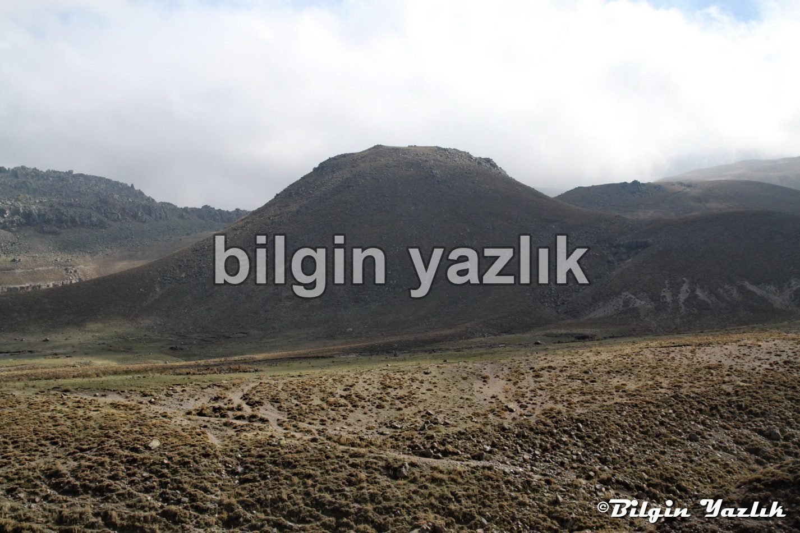
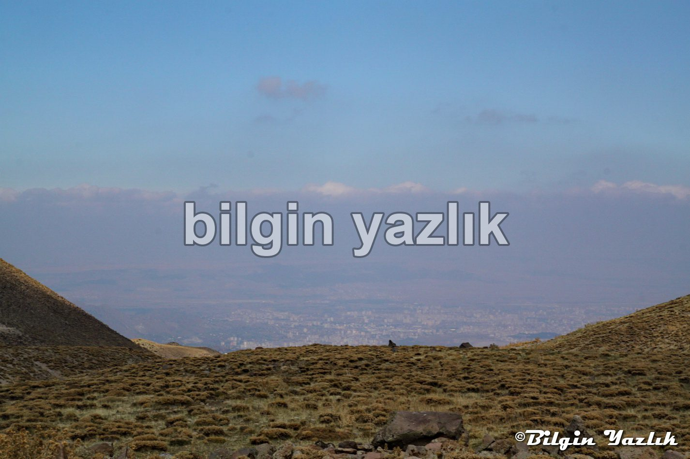
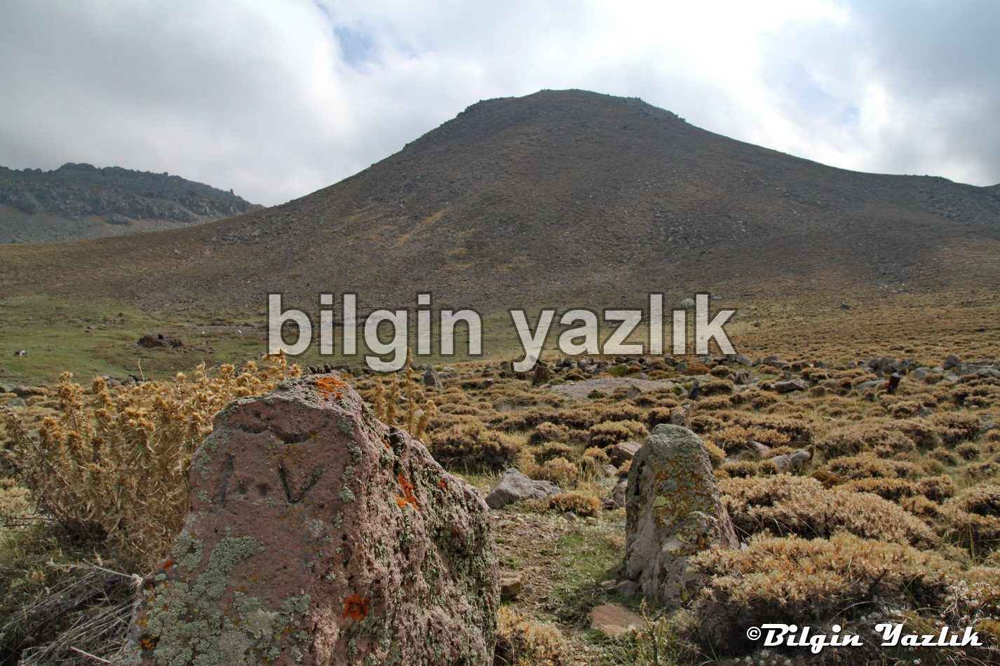
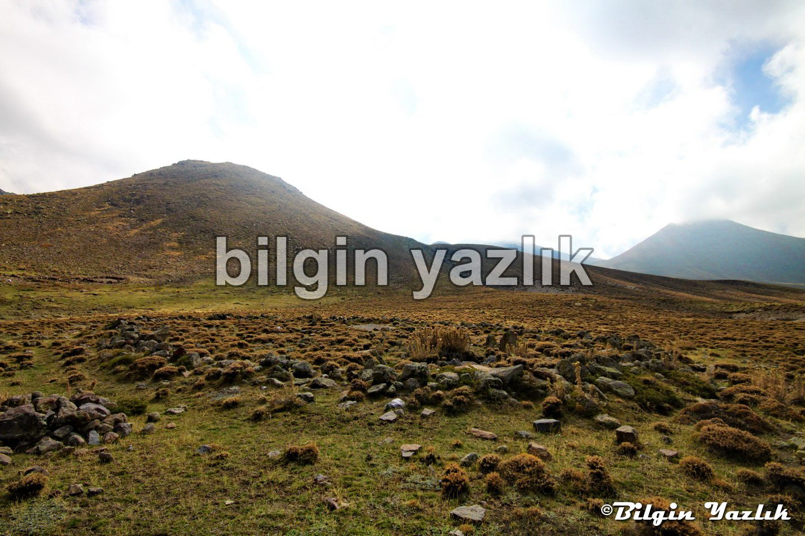

Kayseri & Koramaz · 29 Ekim 2014
Beyler Yurdu (Panis’in Yurdu) Mezarlığı
Erciyes dağının Kefeli dağı arkasından, Bohluca dağı eteklerinde yer alan bu mezarlık doğu batı yönlü kurulmuş.
2600 metre rakımda yer alan bu yayla mezarlığının kimlere ait olduğu ve ne zaman yapıldığı bilinmiyor.
Muhtemel bir müslüman mezarlığı, irili ufaklı 100 kadar mezar var.
Büyük bir mezar taşında 1007 tarihi kazınmış. Bu da yaklaşık 1600’lü yıllara tekabül eden bir tarih oluyor.
Mezarlık’tan bakınca bütün şehir ayaklarınızın altına seriliyor adeta.




Bu yazı taliyol arşivinden taşınmıştır. · özgün kayıt